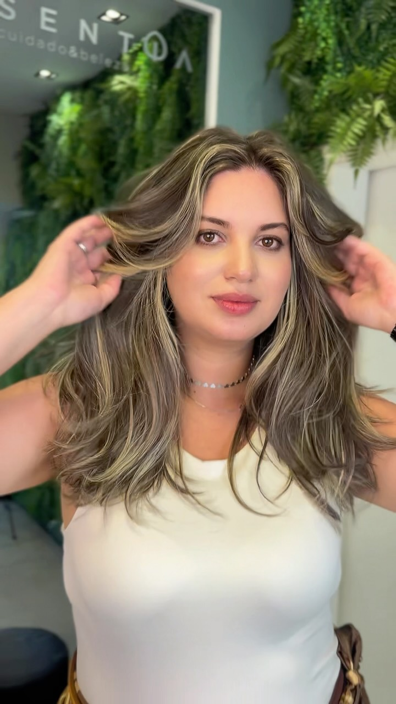
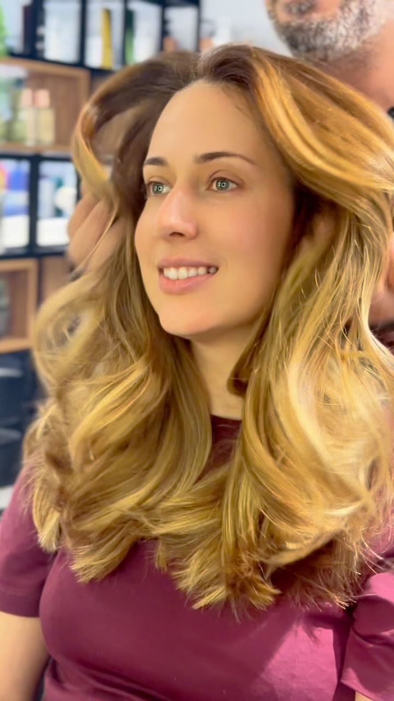
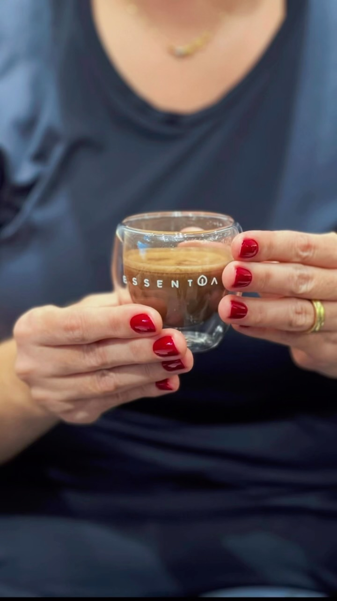
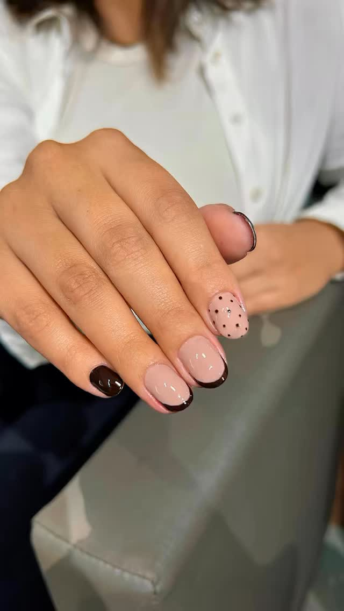
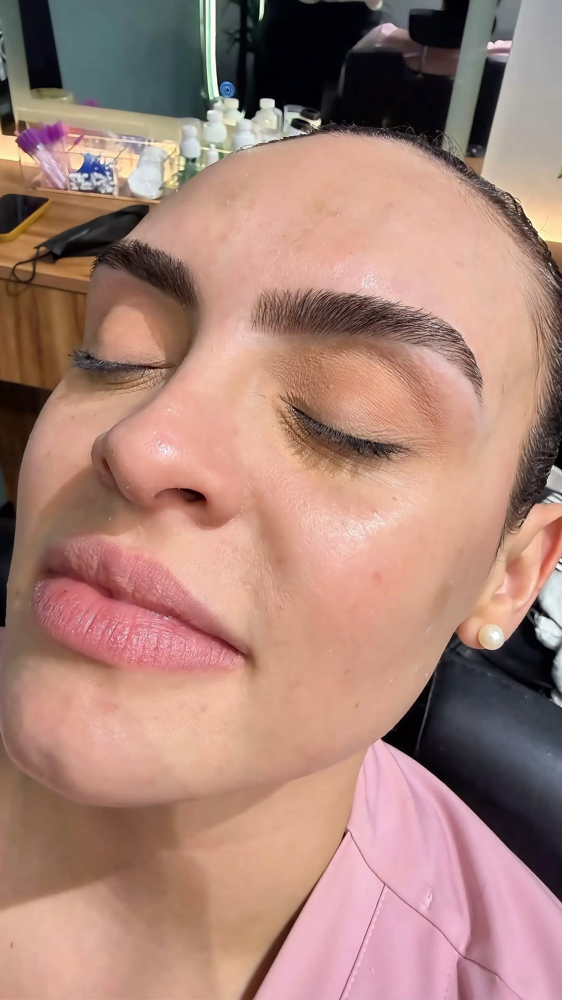
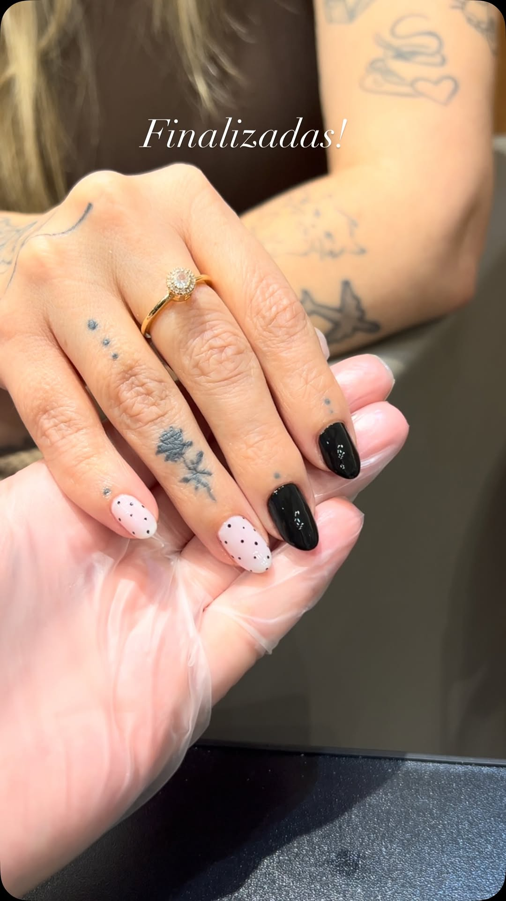

“Você não precisa,
você merece.”
Cabelo, unhas, podologia, estética facial e corporal e depilação, num salão pensado pro seu cuidado, no coração do Centro de São José dos Campos.


Onde o cuidado tem tempo para acontecer
O Essentia fica no Centro de São José dos Campos e foi pensado como um respiro dentro da rotina da cidade: parede verde viva, luz natural e um clima de spa que convida a desacelerar antes mesmo do primeiro atendimento começar.
À frente do salão está a Tati, apoiada por uma equipe que acompanha de perto cada etapa do serviço, do primeiro corte de cabelo até o último retoque no esmalte.
- Ambiente projetado pra relaxar: a parede verde viva e a luz natural criam um clima de spa, bem diferente do corre-corre do Centro lá fora.
- Atendimento próximo, com a Tati e a equipe acompanhando o dia a dia do salão de perto.
- Produtos profissionais em cada etapa, do hair spa à estética.
Serviços em destaque
Cada atendimento é pensado pra unir técnica e cuidado, com o profissional certo pra cada procedimento.
Cabelo
Cortes, coloração e hair spa, com produtos profissionais e acabamento pensado pro seu dia a dia.
Manicure & Pedicure
Unhas cuidadas com atenção ao detalhe, do esmalte clássico ao trabalho mais elaborado.
Podologia
Cuidado técnico com os pés, pensado pra quem precisa de atenção que vai além da estética.
Estética facial & corporal
Procedimentos para cuidar da pele e do corpo, com técnicas e produtos profissionais.
Depilação
Pele lisa e cuidada, com técnicas pensadas pro seu conforto do início ao fim.
Um pouco do dia a dia do salão
Registros reais de trabalhos feitos no Essentia. O portfólio completo está sempre sendo atualizado no Instagram.



Você pode acompanhar mais do dia a dia do salão no Instagram.
Ver no InstagramPerguntas que a gente ouve bastante
Bem no Centro de São José dos Campos
R. Euclídes Miragaia, 449, Centro, São José dos Campos, SP
Seu horário de cuidado começa com uma mensagem
Fale com a gente no WhatsApp e agende no dia e horário que fizer mais sentido pra você.
Falar agora no WhatsAppPrefere ligar? (12) 98245-5536